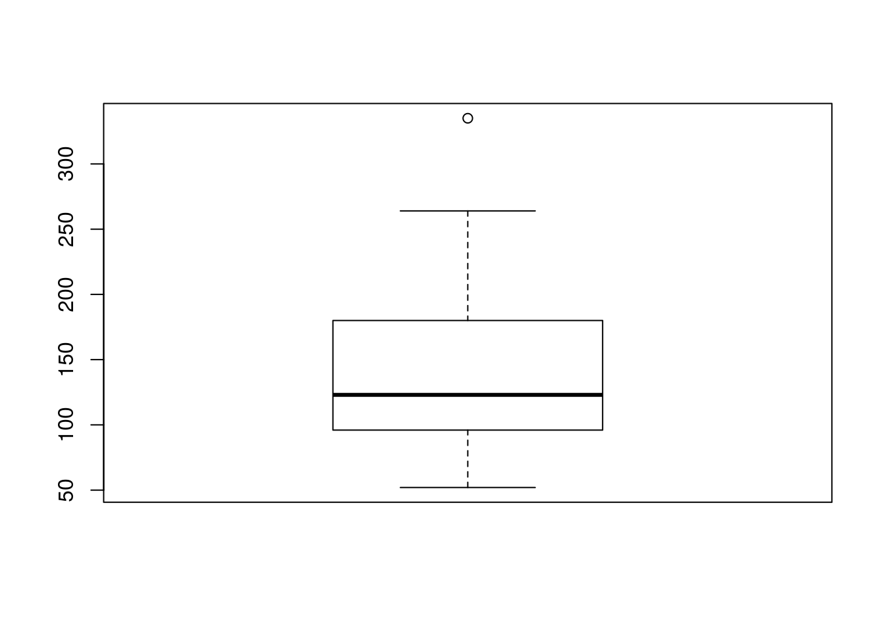
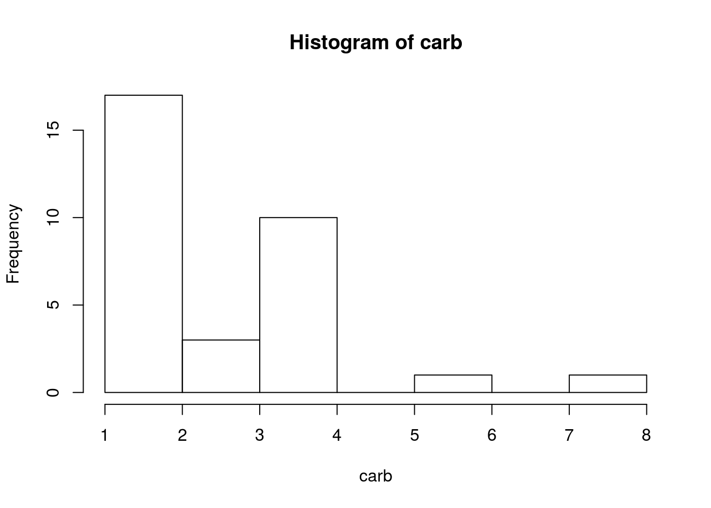

Ejercicio 3 - mtcars
3.1 Cargando los datos
Para este ejercicio usaremos la librería mtcars.
data(mtcars)
attach(mtcars)
head(mtcars)## mpg cyl disp hp drat wt qsec vs am gear carb
## Mazda RX4 21.0 6 160 110 3.90 2.620 16.46 0 1 4 4
## Mazda RX4 Wag 21.0 6 160 110 3.90 2.875 17.02 0 1 4 4
## Datsun 710 22.8 4 108 93 3.85 2.320 18.61 1 1 4 1
## Hornet 4 Drive 21.4 6 258 110 3.08 3.215 19.44 1 0 3 1
## Hornet Sportabout 18.7 8 360 175 3.15 3.440 17.02 0 0 3 2
## Valiant 18.1 6 225 105 2.76 3.460 20.22 1 0 3 1Veamos un breve resumen de los datos.
summary(mtcars)## mpg cyl disp hp
## Min. :10.40 Min. :4.000 Min. : 71.1 Min. : 52.0
## 1st Qu.:15.43 1st Qu.:4.000 1st Qu.:120.8 1st Qu.: 96.5
## Median :19.20 Median :6.000 Median :196.3 Median :123.0
## Mean :20.09 Mean :6.188 Mean :230.7 Mean :146.7
## 3rd Qu.:22.80 3rd Qu.:8.000 3rd Qu.:326.0 3rd Qu.:180.0
## Max. :33.90 Max. :8.000 Max. :472.0 Max. :335.0
## drat wt qsec vs
## Min. :2.760 Min. :1.513 Min. :14.50 Min. :0.0000
## 1st Qu.:3.080 1st Qu.:2.581 1st Qu.:16.89 1st Qu.:0.0000
## Median :3.695 Median :3.325 Median :17.71 Median :0.0000
## Mean :3.597 Mean :3.217 Mean :17.85 Mean :0.4375
## 3rd Qu.:3.920 3rd Qu.:3.610 3rd Qu.:18.90 3rd Qu.:1.0000
## Max. :4.930 Max. :5.424 Max. :22.90 Max. :1.0000
## am gear carb
## Min. :0.0000 Min. :3.000 Min. :1.000
## 1st Qu.:0.0000 1st Qu.:3.000 1st Qu.:2.000
## Median :0.0000 Median :4.000 Median :2.000
## Mean :0.4062 Mean :3.688 Mean :2.812
## 3rd Qu.:1.0000 3rd Qu.:4.000 3rd Qu.:4.000
## Max. :1.0000 Max. :5.000 Max. :8.0003.2 Tablas de frecuencias
Calculamos las tablas de frecuencias de las variables cyl y gear
table(cyl)## cyl
## 4 6 8
## 11 7 14table(gear)## gear
## 3 4 5
## 15 12 5Para obtener la tabla con formato latex, usamos el paquete Knitr
library(knitr)
print(knitr::kable(as.data.frame(table(gear)), format = "latex",
col.names = c("Cilindradas","Num. Cilindradas"),align='c',
caption="Cilindradas por coches"))## \begin{table}
##
## \caption{(\#tab:unnamed-chunk-5)Cilindradas por coches}
## \centering
## \begin{tabular}[t]{c|c}
## \hline
## Cilindradas & Num. Cilindradas\\
## \hline
## 3 & 15\\
## \hline
## 4 & 12\\
## \hline
## 5 & 5\\
## \hline
## \end{tabular}
## \end{table}Como este documento esta hecho en markdown, exportamos la tabla como markdown,
library(knitr)
print(knitr::kable(as.data.frame(table(gear)), format = "markdown",
col.names = c("Cilindradas","Num. Cilindradas"),align='c',
caption="Cilindradas por coches"))| Cilindradas | Num. Cilindradas |
|---|---|
| 3 | 15 |
| 4 | 12 |
| 5 | 5 |
3.3 Tablas de frecuencia absolutas, relativas y acumuladas
Realizaremos este apartado para las variables am y carb. La tabla de frecuencia absoluta es,
print(knitr::kable( table(am,carb), format = "markdown",
align='c',caption="Tabla Transmisión-Nº de carburadores"))| 1 | 2 | 3 | 4 | 6 | 8 | |
|---|---|---|---|---|---|---|
| 0 | 3 | 6 | 3 | 7 | 0 | 0 |
| 1 | 4 | 4 | 0 | 3 | 1 | 1 |
print(knitr::kable(table(am,carb), format = "markdown",
align='c',caption="Tabla Transmisión-Nº de carburadores"))La tabla de frecuencia relativa es,
print(knitr::kable(prop.table(table(am,carb)), format = "markdown",
align='c',caption="Tabla Transmisión-Nº de carburadores"))| 1 | 2 | 3 | 4 | 6 | 8 | |
|---|---|---|---|---|---|---|
| 0 | 0.09375 | 0.1875 | 0.09375 | 0.21875 | 0.00000 | 0.00000 |
| 1 | 0.12500 | 0.1250 | 0.00000 | 0.09375 | 0.03125 | 0.03125 |
La tabla de frecuencia acumulada para carb es,
print(knitr::kable(cumsum(table(carb))), format = "markdown")| 1 | 2 | 3 | 4 | 6 | 8 | |
|---|---|---|---|---|---|---|
| 7 | 17 | 20 | 30 | 31 | 32 |
La tabla de frecuencia acumulada para am es,
print(knitr::kable(cumsum(table(am))), format = "markdown")| 0 | 1 | |
|---|---|---|
| 19 | 32 |
3.4 Resumen descriptivo
Con la función summary(), realiazamos un estudio sobre nuestros datos,
summary(mtcars)## mpg cyl disp hp
## Min. :10.40 Min. :4.000 Min. : 71.1 Min. : 52.0
## 1st Qu.:15.43 1st Qu.:4.000 1st Qu.:120.8 1st Qu.: 96.5
## Median :19.20 Median :6.000 Median :196.3 Median :123.0
## Mean :20.09 Mean :6.188 Mean :230.7 Mean :146.7
## 3rd Qu.:22.80 3rd Qu.:8.000 3rd Qu.:326.0 3rd Qu.:180.0
## Max. :33.90 Max. :8.000 Max. :472.0 Max. :335.0
## drat wt qsec vs
## Min. :2.760 Min. :1.513 Min. :14.50 Min. :0.0000
## 1st Qu.:3.080 1st Qu.:2.581 1st Qu.:16.89 1st Qu.:0.0000
## Median :3.695 Median :3.325 Median :17.71 Median :0.0000
## Mean :3.597 Mean :3.217 Mean :17.85 Mean :0.4375
## 3rd Qu.:3.920 3rd Qu.:3.610 3rd Qu.:18.90 3rd Qu.:1.0000
## Max. :4.930 Max. :5.424 Max. :22.90 Max. :1.0000
## am gear carb
## Min. :0.0000 Min. :3.000 Min. :1.000
## 1st Qu.:0.0000 1st Qu.:3.000 1st Qu.:2.000
## Median :0.0000 Median :4.000 Median :2.000
## Mean :0.4062 Mean :3.688 Mean :2.812
## 3rd Qu.:1.0000 3rd Qu.:4.000 3rd Qu.:4.000
## Max. :1.0000 Max. :5.000 Max. :8.0003.5 Outliers
Vamos a estudiar los posibles outliers de la variable wt. Primero la representamos por un diagrama de caja y bigote
gr <- boxplot(wt)
Observamos que hay dos datos atípicos. Veamos cuales son.
gr$out## [1] 5.424 5.345A continuación, lo veremos con la variable hp
gr <- boxplot(hp)
Observamos que hay un valor atípico.
gr$out## [1] 3353.6 Histograma
Vamos a calcular el histograma para drat y carb
hist(drat)
hist(carb)
3.7 Regresión
Estudiamos que variables son mas adecuadas para hacer una regresión.
pairs(mtcars)
Interactuaremos con la siguiente aplicación shiny para todas las variables de los datos.
# require(shiny)
# shinyApp(
#
# ui = fluidPage(
#
# titlePanel("Regresión de Y~X"),
#
# sidebarLayout(
#
# sidebarPanel(
# selectInput("variable1", "Variable Y:",
# choices=c("mpg", "cyl",
# "disp","hp","drat","wt","qsec","vs","am","gear","carb")),
# hr(),
# selectInput("variable2", "Variable X:",
# choices=c("mpg", "cyl",
# "disp","hp","drat","wt","qsec","vs","am","gear","carb"))
# ),
#
# mainPanel(
# fluidRow(column(12, verbatimTextOutput("correlacion")))
# )
#
# )
# ),
#
# server = function(input, output) {
#
# output$correlacion <- renderPrint({
# summary(lm(mtcars[input$variable1][,1] ~ mtcars[input$variable2][,1]))
# #trees[input$variable1][,1],
# })
# },
#
# options = list(height = 750)
# )De la misma manera, lo haremos para el coeficiente de correlación lineal.
# require(shiny)
# shinyApp(
#
# ui = fluidPage(
#
# titlePanel("Coeficiente de regresión de Y~X"),
#
# sidebarLayout(
#
# sidebarPanel(
# selectInput("variable1", "Variable Y:",
# choices=c("mpg", "cyl",
# "disp","hp","drat","wt","qsec","vs","am","gear","carb")),
# hr(),
# selectInput("variable2", "Variable X:",
# choices=c("mpg", "cyl",
# "disp","hp","drat","wt","qsec","vs","am","gear","carb"))
# ),
#
# mainPanel(
# fluidRow(column(12, verbatimTextOutput("correlacion")))
# )
#
# )
# ),
#
# server = function(input, output) {
#
# output$correlacion <- renderPrint({
# cor(mtcars[input$variable1][,1],mtcars[input$variable2][,1])
# })
# },
#
# options = list(height = 450)
# )